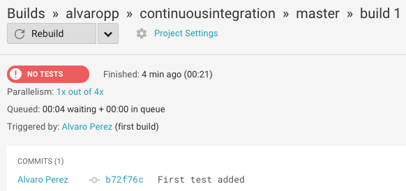
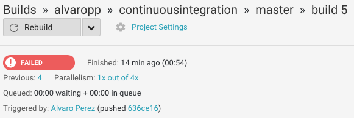
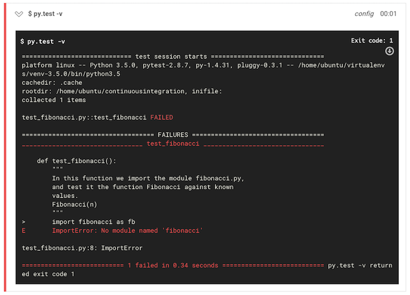
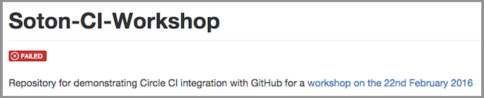
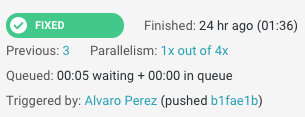
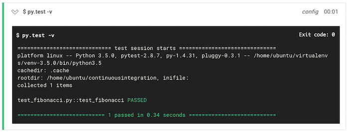
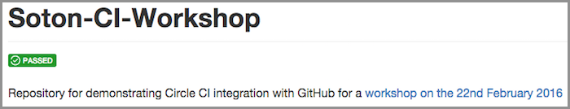
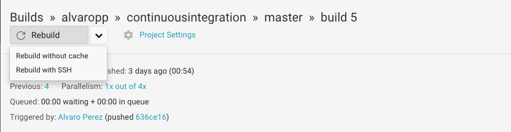
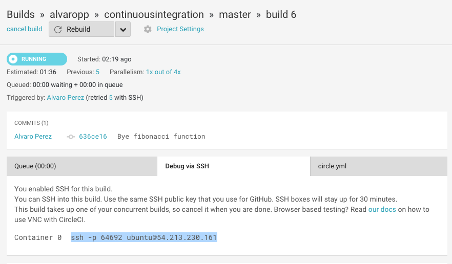
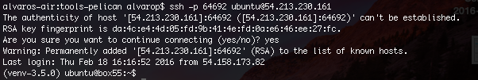

This blog entry accompanies a workshop delivered on 22/02/2016 as part of Advanced Computational Methods II. It can also be used as standalone exercise.
Continuous Integration - What is the point?
Continuous integration (CI) is a method for automatically testing software whenever you reach a milestone in the development process. These milestones should be small; the addition of a new function, for example. Using version control (as all good programmers should!) and CI allows you to see immediately when a new feature has broken something, which leads to cleaner code, a faster development process and considerably less bug hunting.
Getting Started - a Guided Exercise
This turorial uses Python, GitHub and CircleCI to provide a simple example illustrating the main features of Continuous Integration.
Installation
If you're using OS X or Linux on your personal laptop, you can just follow our instructions straight away: you just need access to command line, and git and Python installed. If you are using Windows, it is probably best to use a Virtual Machine with a Linux distribution on it: you can use Virtual Box and the following image.
You will also need GitHub and CircleCI accounts, both services are free.
Create your repository
Set up an account on GitHub if you don't already have one, and create a public repository called continuousintegration. Make sure you select the option to initialise with a README.md file. Clone this repository to your computer and change to the directory using.
git clone https://github.com/yourusername/continuousintegration.git
cd continuousintegration
Write your tests and try the CI service
We are going to use Python for the demonstration of the Circle CI service, just for simplicity but you can use any language provided it can be installed on a Debian Linux distribution (which is what Circle is based on), and it has a unit testing framework (or the functionality exists to wrap the language so it can be accessed in a language which does).
We will guide you through a simple example of testing a function which generates the fibonacci sequence elements.
Starting out simply, create a file called test_fibonacci.py in the directory. We will start by writing a test to compare the output from a function called Fibonacci
def test_fibonacci():
"""
In this function we import the module fibonacci.py,
and test it the function Fibonacci against known
values.
Fibonacci(n)
"""
import fibonacci as fb
assert fb.Fibonacci(10) == 55
assert fb.Fibonacci(5) == 5
Commit this file and push it to the GitHub repository
git add test_fibonacci.py
git commit -m 'Added first test'
git push
Now, we clearly haven't written the function Fibonacci yet, but we'll show how to set up CircleCI so that you know you haven't written the function yet.
Go to CircleCI, and log in using your GitHub account. Authorise your account, and you will go to a page titled "Add Projects." Select your account name from the list below, and then the repository continuousintegration, and click "Build Project." This sets up the connection between the CI service and your GitHub repository, and starts a virtual machine on CircleCI's servers, then clones the most recent commit from GitHub, and then turns off again as we have not told it to do anything, with the error message "No Tests."

The next step is therefore to set the build environment up so that the virtual machine will run tests when we then push a commit.
CircleCI Configuration
Create a file in the continuousintegration folder on your computer called circle.yml. This file is used to specify programmes which need to be installed, such as interpreters or compilers.
Circle has many prebuilt binaries of common programming languages, to avoid using more compute time than necessary. You can see a full list of these here. Below, you can see how we initiate a machine using the London timezone, and Python 3.5.0.
machine:
timezone:
Europe/London
python:
version: 3.5.0
We now need to specify the dependencies our project needs to run. We do this with a 'dependencies' block as follows:
dependencies:
pre:
- pip install pytest
You can install more packages as needed in your own project. If, for example you wanted to install a non-python project you could run any bash script here, pull packages from apt
Finally, we need to tell Circle what to run. In the case of our example, we can just use the following to run our simple test:
test:
override:
- py.test -v
We should now commit the circle.yml file to the repository:
git add circle.yml
git commit -m "Added CircleCI config file"
git push
Then we can go back to the CicleCI website and wait for the tests to run. The test runs and fails as the function we are testing doesn't exist (yet).


Add the CircleCI status badge to your GitHub repository (very handy!)
Just add the following code to the README.md file in your repository, make sure you change yourusername by your actual username:
[](https://circleci.com/gh/yourusername/continuousintegration)
Add the changes, commit and push to GitHub:
git add README.md
git commit -m "Added CircleCI badge to README file"
git push
Now, when you go to your GitHub repository you should see a red badge saying "Failed":

We will turn it to green in the next step!
Write the actual code and pass the tests!
Let's now write the actual Fibonacci function we wish to test: create a file fibonacci.py and type the following naïve code:
def Fibonacci(n):
"""
Return the n-th value of the Fibonacci sequence
[0, 1, 1, 2, 3, 5, 8, 13, ...]
"""
if n == 0:
return 0
elif n == 1:
return 1
else:
return Fibonacci(n-1) + Fibonacci(n-2)
We can now commit our changes again:
git add fibonacci.py
git commit -m "Added Fibonacci function in file fibonacci.py"
git push
and get our first green light message!

We can check that indeed, our test has passed successfully:

and we have a green badge in our GitHub account:

Add more tests
Say that we want to test that our function does something sensible with an invalid input - the Pythonic way of handling an invalid value is to throw an exception. We can modify our test to check that exceptions are thrown by the function for cases such as:
- A negative input.
- A non integer input.
We do this by importing the unittest module, which comes with Python, and creating a test class which inherits from the class TestCase. We then use the TestCase function assertRaises() to check the type of exception thrown when the Fibonacci function is called with values -5 and 5.1.
import unittest
class FibExceptions(unittest.TestCase):
def test_fibonacci(self):
"""
In this function we import the module fibonacci.py,
and test it the function Fibonacci against known
values.
Fibonacci(n)
"""
import fibonacci as fb
assert fb.Fibonacci(10) == 55
assert fb.Fibonacci(5) == 5
def test_Fibonacci_throws_exception(self):
"""
We test here that when a negative value is passed as n
to the Fibonacci function, it throws an exception.
"""
import fibonacci as fb
self.assertRaises(ValueError, fb.Fibonacci, -5)
def test_Fibonacci_float_handling(self):
"""
Tests that input is an integer
"""
import fibonacci as fb
self.assertRaises(ValueError, fb.Fibonacci, 5.1)
This test then passes with a modified Fibonacci function:
def Fibonacci(n):
"""
Return the n-th value of the Fibonacci sequence
[0, 1, 1, 2, 3, 5, 8, 13, ...]. Throws an exception
for a non-valid input (n < 0 or n not integer).
"""
if n < 0:
raise ValueError("n must be greater than zero")
elif round(n) != n:
raise ValueError("n must be a whole number")
elif n == 0:
return 0
elif n == 1:
return 1
else:
return Fibonacci(n-1) + Fibonacci(n-2)
Commit and push again, and go to your CircleCI page, you should see a message saying that the three tests passed successfully!
SSH access in a CircleCI build
It's possible to add compilers, programs and your own code to CircleCI just by adding additional dependencies to the circle.yml file. It may be that you're not sure that it something will compile, or it's possible that a dependency is not present in the Ubuntu apt package manager. You may want to see specifically why a test failed, and check a modified version of the code works. If this is the case, it is possible to use SSH to log into a build box and check!
In order to do this, you must first set up SSH access with your GitHub account. If you do not already have this set up, following these instructions on the GitHub site
Now, navigate to the CircleCI page for your repository. In the latest build, you can see a Rebuild menu - click the arrow to expand the list, and select Rebuid with SSH.

The build will then start, and you can then see a list of Containers, and the associated commands needed to login. For our simple case, we should see only something like the following, with a single Container:

If you then copy the highlighted text, and execute it in a terminal, you can log into the box and do whatever you like. As a warning - if you are disconnected, it may mean that you are using too much memory in the remote box.

Where to from here?
We've shown you some very brief and easy things to do with CircleCI. Some more advanced features that you may like to try out are:
- Parallelism - you are able to split your tests across multiple boxes in order to reduce the time taken to test.
- Dependency Caching In order to spend less time building the Virtual Machine, you can cache directories of other dependencies or compiled code.
- Docker - Circle also offers some basic support for running Docker inside your build.